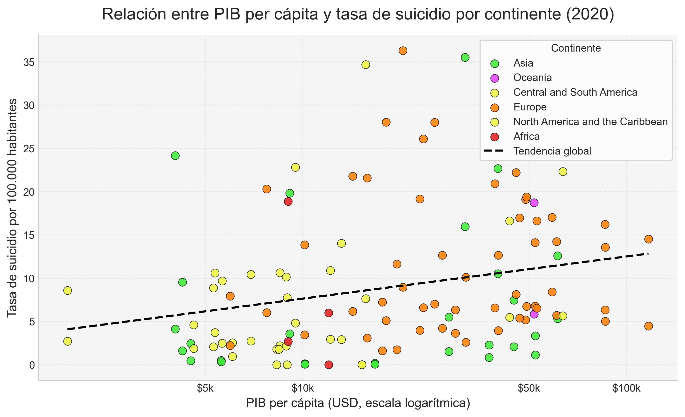

Análisis de la Visualización
Este gráfico de dispersión utiliza una escala logarítmica para el eje X (PIB per cápita) con el fin de representar mejor la disparidad económica entre naciones. La línea de tendencia punteada indica la dirección general de la relación, mientras que el punto Chile 🇨🇱 resalta la posición de nuestro país en este contexto global.
Hallazgos clave:
- Tendencia: La regresión lineal nos permite observar si existe un patrón de crecimiento o descenso vinculado al desarrollo económico.
- Outliers: Se identifican países que, pese a su alto PIB, mantienen tasas de suicidio elevadas, desafiando la idea de que la riqueza económica soluciona las crisis de salud mental.
Ficha Técnica
Fuentes: GHDx (IHME) y Registros de Desarrollo del Banco Mundial / OCDE.
Año de análisis: 2016
Herramientas: Python (Pandas, Seaborn, Matplotlib) y despliegue en GitHub Pages.